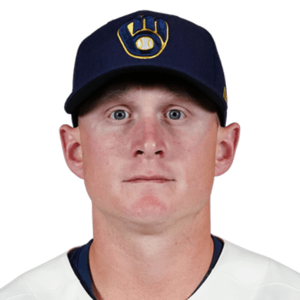

BASEBALLKEEP
Dynasty · Redraft · Diamond
Player File · 1B MIL

Andrew Vaughn
#28 · 1B · Milwaukee Brewers · age 28 · B/T RR · 5' 10" / 215 lbs · MLB debut 2021 · Santa Rosa, USA
Keep avg342.5
# Boards2
BK Value11
Spread222–463
Hitting
| Year | G | AB | R | H | 2B | HR | RBI | SB | BB | SO | AVG | OBP | SLG | OPS |
|---|---|---|---|---|---|---|---|---|---|---|---|---|---|---|
| 2026 | 82 | 228 | 29 | 69 | 16 | 5 | 36 | 0 | 30 | 40 | .303 | .392 | .456 | .848 |
| 2025 | 112 | 406 | 35 | 103 | 22 | 14 | 65 | 0 | 31 | 80 | .254 | .307 | .411 | .718 |
Pitching
| Year | G | GS | W | L | SV | HLD | IP | K | BB | HR | ERA | WHIP | K/9 |
|---|---|---|---|---|---|---|---|---|---|---|---|---|---|
| 2026 | 1 | 0 | 0 | 0 | 0 | 0 | 1.0 | 1 | 2 | 1 | 27.00 | 5.00 | 9.00 |
The Keep#363BK 11
The Lineup#267BK 54
Redraft#363BK 11
Baseball Savant
Starcast · spray · pitch
Percentile ranks (Starcast) plus the official Savant spray chart for bats and pitch chart for arms. Open the full Baseball Savant page.
Batter · 2025
xwOBA
81
xBA
86
xSLG
81
xISO
73
xOBP
63
Barrels
66
Barrel %
75
EV
84
Max EV
68
Hard Hit %
79
K %
70
BB %
32
Whiff %
67
Chase %
46
Speed
17
Arm
22
OAA
78
Bat Speed
25
Squared Up
93
Swing Len
42
Hits spray chart
Pitch chart
Minus
- Board spread 222–463 (241 ranks).
Every Board
Spread 222–463 · 2 sources
| Source | Rank |
|---|---|
| TDG Points | 222 |
| RotoGraphs Model | 463 |
BK News
On The Keep nearby — Hurston Waldrep (#361) · Alejandro Kirk (#362) · Will Warren (#364) · Austin Wells (#365)
All players · The Keep · BK News · The Lineup · Pitchers · Calculator